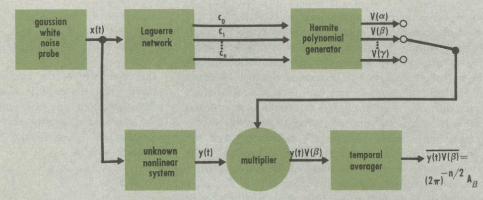
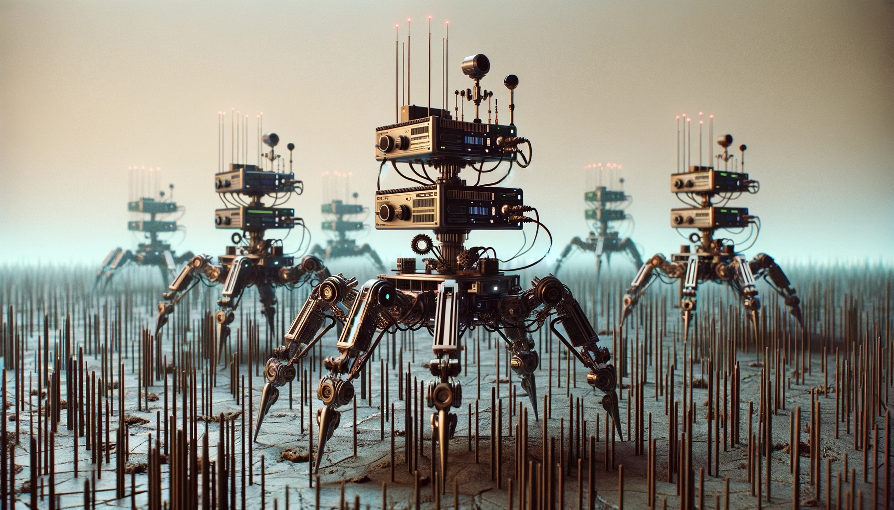

Cybernetics
In the creation lore of artificial intelligence, John McCarthy coined the term “artificial intelligence” to distinguish his approach from “cybernetics”, which was dominated by Norbert Wiener. However, if that is the case, then we can infer that there was a real danger that artificial intelligence could have been confused with Norbert Wiener’s cybernetics. That is, they must have some real similarity. If the similarity is not in style or approach – as otherwise there would be no need to distinguish the two – then the similarity must be in goal.
And indeed there is. I was first alerted to this by Wiener’s little book (Wiener 1964, chap. 4), which briefly sketched out a machine that could purportedly imitate any machine, including another copy of itself, thus effecting both machine learning and machine reproduction. Unfortunately, it attempted to be a popular science book and explained concepts with a minimum of mathematical symbols, thus providing the reader with a minimum of understanding. Nevertheless, I figured it out by consulting his other books, and so I decided to write this post for posterity as a simple sketch of another way to think about machine intelligence and machine life. A view of another universe, perhaps, or as the theoretical basis of some hard sci-fi to be written.
This cybernetic machine is a rather obscure one, and most of the references are decades-old. The main references I relied on to write this essay are (Wiener 1958, chaps. 10, 11; 2019, chap. 9; O’Hagan 2013; G. H. Harris and Lapidus 1967).
Wiener’s terminology is occasionally obsolete, and unfortunately the subject of cybernetic artificial intelligence is essentially never updated since Wiener, so anyone trying to study the subject must contend with his publications. So here is a list of obsolete terminology and my explanations.
- shot noise, shot effect, tube noise: white noise. It is not Poisson noise.
- chaos: a generic term for randomness, or random variables. It is not chaos theory.
- voltage multiplier: an electronic device that multiplies two voltages together, by \((x, y) \mapsto xy\). It is not the voltage multiplier.
The nonlinear transducer model
According to Wiener, cybernetics is the science of control and communication in the animal and the machine. To be more precise, he used the following model of sweeping generality: the nonlinear transducer model.
Definition 1 (signal) A signal is a function of time, written as \(x(t)\), where \(t \in \mathbb{R}\). The signal can take value in any space, but for convenience, we will only consider the case where \(x\) is real-valued. That is, we only consider functions of type \(x : \mathbb{R}\to \mathbb{R}\).
A transducer transduces, meaning that it takes in a signal and outputs a signal. Antennas, filters, circuits of resistors and capacitors, and essentially electronic devices that do not require power input to run, are transducers. Wiener considered only deterministic, causal transducers, meaning that the output of a transducer at time \(t\) is determined by the inputs during the period \((-\infty, t]\).
In large sections of electronic engineering, electronic circuits are studied as either linear and continuous, or as nonlinear and discrete. Nonlinear but continuous devices are very difficult to study in general, but Wiener took on it and constructed a theory for general nonlinear continuous transducers.
Definition 2 (nonlinear transducer)
- The transducer is a function \(T\), such that given any real-valued function \(x : \mathbb{R}\to \mathbb{R}\), it returns a real-valued function \(T[x] : \mathbb{R}\to \mathbb{R}\). In other words, it sends real-valued signals to real-valued signals.1
- The transducer’s output at any time \(t\) is determined by the value of \(x\) on the interval \((-\infty, t]\). In other words, it is causal and deterministic.
- The transducer is stationary in time. That is, if \(x\) is the same over the interval \((-\infty, t]\) as \(x'\) over the interval \((-\infty, t']\), then \(T[x](t) = T[x'](t')\).
- The transducer has a limited amount of memory, so that its dependence on the high-frequency details of the input signal decreases rapidly as frequency increases. We will explain the meaning of this assumption later.
- The transducer depends analytically on the frequencies of the input signal. We will explain the meaning of this assumption later.
1 Wiener actually studied general multidimensional signals, but those involve mostly notational complications, with no new ideas.
Orthogonal functions
In order to present Wiener’s approach to nonlinear control theory, we need a small amount of theory of orthogonal polynomials. Specifically, we need the Hermite and Laguerre polynomials. Those are not as famous as the trigonometric functions, but they are used in the same way as the trigonometric functions in Fourier analysis. In Fourier analysis, every well-behaved (in the Fourier sense) function is decomposable as an infinite linear sum of trigonometric functions. Similarly, every well-behaved function (in the Hermite sense) is decomposable into an infinite linear sum of Hermite functions, and the same applies to Laguerre functions.
Laguerre functions
The Laguerre polynomials are defined by \[ L_n(x) := \sum_{k} \binom{n}{k}\frac{(-1)^k}{k!} x^k \tag{1}\]
Proposition 1 (Laguerre polynomials are orthogonal with respect to the exponential distribution) \[ \int_{0}^\infty e^{-x}L_m(x) L_n(x)dx = \delta_{mn} \]
Proof. The Laguerre polynomials are generated by the following function
\[ g(t, x) = \sum_{n=0}^\infty t^n L_n(x)= \frac{1}{1-t} e^{-tx/(1-t)} \]
This can be verified that the definition of \(L_n\) according to the generating function \(g\) and according to Equation 1 both satisfy \(xL_n'' + (1-x) L_n' + nL_n = 0\), and both have the same value and first derivative at \(x=0\). Therefore they are equal for all \(x\).2
2 Of course, this is not the most natural or productive way to show this, but this post is not about orthogonal polynomial theory. So the proof is meant to only build trust, not general competency in orthogonal polynomial theory.
We can define the Laguerre functions by \(\psi_n(t) := e^{-t/2}L_n(t)\), which makes the definition cleaner:
\[ \int_0^\infty \psi_n(t)\psi_m(t) dt = \delta_{mn} \tag{2}\]
Given Proposition 1, we can represent any well-behaved function on the \((-\infty, t]\) as an infinite sum of Laguerre functions
\[ f(t-\tau) = \sum_{n \geq 0} c_n \psi_n(\tau) \]
by taking a convolution with the Laguerre functions
\[ c_n = \int_0^\infty f(t-\tau) \psi_n(\tau) d\tau. \]
Hermite polynomials
Definition 3 (physicist’s Hermite polynomials) \[ \sum_n H_n(x) \frac{1}{n!}t^n = e^{-t^2 + 2tx} = g(t, x) \tag{3}\]
Proposition 2 (Hermite polynomials are orthogonal with respect to the normal distribution with variance 1/2) \[\int_\mathbb{R}e^{-x^2}H_n(x) H_m(x) dx = \sqrt\pi 2^n n! \delta_{mn}\]
Proof. \[\int e^{-x^2} g(t, x)g(s, x) dx = \sum_{n, m \geq 0}\frac{1}{n!m!}t^ns^m \int e^{-x^2} H_n(x) H_m(x) dx\]
The left side equals \(\sqrt\pi e^{2st}\). Now expand it in powers of \(s, t\).
Learning and reproducing any transducer
Now we are ready to perform the “Hermite–Laguerre expansion”, Wiener’s way to analyze (learn) and synthesize (reproduce) arbitrary transducer using pure analog devices.
Algebra of analog circuitry
In an analog electronic circuit, real numbers are represented as voltages across two points (“ports”) in the circuit. Adding is as simple as making a serial connection. Negation is even simpler: just connect the ports in the opposite direction. Multiplication is significantly trickier, but it can be done. There are electronic devices with nonlinear response characteristics, meaning that they have two input ports and two output ports, and if you apply an input voltage \(x\) across one such device, the output voltage would be \(f(x)\) where \(f\) is not a linear function. Now suppose that \(f(x) = x^2\).3
3 From our vantage point, the universal approximation theorems proven in the early 1990s show that, generically, if we have any nonlinear function \(f_0\) at all, then we can construct any activation function \(f\) as a neural network, by using many copies of the \(f_0\) device as activation functions and linear devices as weights and biases.
With such \(f\), we can multiply two voltages by \(xy = (f(x+y) - f(x) - f(y)) \times 0.5\), and so we can construct any polynomial function in any number of variables. That is, we can do algebra by analog devices, as long as we have a voltage multiplier.
Of course, we don’t hear about voltage multipliers often, and this is no accident – it is quite difficult to get one with good performance. In the preface to the second edition of Cybernetics1961 (Wiener 2019, xli), Wiener waxes praise about Gabor’s breakthrough circuit device that could multiply two voltages at a frequency of \(1\; \mathrm{kHz}\):
While there are many approaches to the problem of multiplying two functions electrically, this task is not technically easy. On the one hand, a good multiplier must work over a large range of amplitudes. On the other hand, it must be so nearly instantaneous in its operation that it will be accurate up to high frequencies. Gabor claims for his multiplier a frequency range running to about 1,000 cycles. … he does not state explicitly the amplitude range over which his method of multiplication is valid nor the degree of accuracy to be obtained. I am awaiting very eagerly4 an explicit statement of these properties so that we can give a good evaluation of the multiplier for use in other pieces of apparatus dependent on it.
4 Gabor published it in the same year of 1961: (Gabor, Wilby, and Woodcock 1961).
To our modern ears, multiplying two voltages 1000 times a second by analog means seems simultaneously astonishing and obsolete. Intel 8086 in 1976 already could multiply a million times a second, and whatever has come of Gabor’s universal filter? It seems to me that Wiener never accepted the future of digital computers, preferring the concrete certainty of magnetic cores and electric wires.
The Laguerre filter bank
To find the Laguerre coefficients of a signal, we need to perform a convolution. Convolutions become products after a Laplace transform, so we need to find the Laplace transform of the Laguerre functions \(\psi_n = e^{-x/2}L_n(x)\). Fortunately, it is easy to compute. We simply read from a standard table:
\[ \mathcal L [t^n e^{-\alpha t}\theta(t)] = \frac{n!}{(s+\alpha)^{n+1}} \]
where \(\theta(t) = 1_{t \geq 0}\) is the zero-one step function.
Then, since the Laplace transform is linear, we have after simplification
\[ \mathcal L[\psi_n\theta] = \frac{1}{s+1/2}\left(\frac{s-1/2}{s+1/2}\right)^n \]
This gives a simple filter bank that constructs the Laguerre coefficients for any signal. The input signal passes through a \(\frac{1}{s+1/2}\) filter to obtain the \(c_0\) coefficient, and then through a \(\frac{s-1/2}{s+1/2}\) filter to obtain the \(c_1\) coefficient, and so on. This filter bank can be constructed with standard resistors and capacitors.
The following theorem finishes the last piece of the puzzle. (G. H. Harris and Lapidus 1967) claims that the proof is found in (Bose 1956; George Henry Harris 1966), but I did not check.
Theorem 1 Let \(x(t)\) be a white noise process with variance \(1/2\), and let \(c_0(t), c_1(t), ...\) be its Laguerre coefficients, then:
- the joint stochastic process \((c_0(t), c_1(t), ...)\) is stationary;
- for any fixed \(t\in \mathbb{R}\), the random variables \(c_0(t), c_1(t), ...\) are independent samples of the standard gaussian distribution \(\mathcal N(0, 1/2)\).
The Hermite coefficients
For a given input signal \(x : \mathbb{R}\to \mathbb{R}\), we pass it into the Laguerre filter bank. The readouts from the filter bank are the signals \(c_0(t), c_1(t), ...\). They satisfy the equation
\[ x(t - \tau) = \sum_{n\geq 0} c_n(t) \psi_n(\tau), \; \forall \tau \geq 0\quad \forall t \in \mathbb{R} \]
In words, at any cut-off time \(t \in \mathbb{R}\), the signal we have seen so far is \(x(t - \tau)\) with \(\tau \geq 0\). This signal is then decomposable as a linear sum of Laguerre functions \(\sum_{n\geq 0} c_n(t) \psi_n(\tau)\), where \(c_n(t)\) are the Laguerre coefficients. The coefficients depend on the cut-off time \(t\), but do not depend on \(\tau\), which is not “real” time, but only a kind of “relative historical time”, as we look into the past standing at time \(t\).
A transducer, by our assumption, is deterministic and causal, so that \(T[x](t)\) is a deterministic function of the signal we have seen so far, and so it is a deterministic function of \(c_0(t), c_1(t), c_2(t), ...\). Note carefully that it is determined by \(c_0(t), c_1(t), c_2(t), ...\) at this very instant \(t\). It does not need to know the values of \(c_0(t'), c_1(t'), c_2(t'), ...\) at any \(t' \neq t\). We write it as follows:
\[ T[x](t) = T(c_0(t), c_1(t), c_2(t), ...) \]
By our assumption that the transducer has a limited memory, we should be able to ignore the higher frequency components of the input signal, and still recover a good approximation of \(T\). That means that \(T[x](t) = T(c_0(t), c_1(t), c_2(t), ...) \approx T(c_0(t), ..., c_n(t))\), with the approximation increasing in accuracy as \(n\) increases.
By our assumption that the transducer is analytic with respect to the input, \(T(c_0(t), ..., c_n(t))\) has a multivariate Hermite serial expansion (the same idea as multivariate Taylor expansion):
\[ T(c_0(t), ..., c_n(t)) = \sum_{m_0, ..., m_n \geq 0} T_{m_0, ..., m_n} H_{m_0}(c_0(t)) \cdots H_{m_n}(c_n(t)) \]
We are quite close to the target. We can compute the Laguerre coefficients \(c_n(t)\) of any input signal by the Laguerre filter bank. We can construct analog circuits that compute \(H_m(c_n(t))\), the Hermite polynomial values of the Laguerre coefficients. The remaining challenge is to determine the coefficients \(T_{m_0, ..., m_n}\).
This is where Theorem 1 comes to finish the construction. Let \(x(t)\) be a white noise process, then since
\[ T[x](t) \approx \sum_{m_0, ..., m_n \geq 0} T_{m_0, ..., m_n} H_{m_0}(c_0(t)) \cdots H_{m_n}(c_n(t)) \]
and since the Laguerre coefficients are independent samples of the standard gaussian, we have
\[ T_{m_0, ..., m_n} \approx \mathbb{E}\left[T[x](t)\; H_{m_0}(c_0(t)) \cdots H_{m_n}(c_n(t))\right] \]
where the expectation is in the sense of ensemble expectation. That is, we would run this experiment once with a white noise process, freeze it exactly at the moment \(t\), then run it again with another white noise process, freeze it exactly at the moment \(t\), and so on. Then we average over all these experiments.
However, Theorem 1 states that the Laguerre coefficients are stationary, meaning that we have ergodicity5: the ensemble average is the time average, and so
5 Wiener was really into ergodic theory.
\[ T_{m_0, ..., m_n} \approx \lim_{T \to \infty} \frac{1}{T} \int_0^T T[x](t)\; H_{m_0}(c_0(t)) \cdots H_{m_n}(c_n(t)) dt \]
The integrand is computable by the analog devices we described. The integration-and-averaging can be done with a very low-pass filter – taking the average is essentially passing only the zero-frequency signal, and so it is the lowest possible low-pass filter. Finally, since white noise is all around us, it can be obtained in many ways, such as by amplifying the thermal noise in a resistor.
And so we have a finished machine, where the white noise \(x\) and the signal to imitate \(T[x](t)\) come in, and fitted parameters \(T_{m_0, ..., m_n}\) come out. The fitted parameters can be automatically read and adjusted by electromechanical devices, such as relays and step motors, allowing us to connect the machine in parallel with an unknown transducer, run it for a period over a white noise input, and ultimately achieve a machine that precisely imitates the unknown transducer.

The science of control and communication in the animal and the machine
We have reached the end of the road, and have found ourself facing the general purpose learning machine. This machine can imitate any black-box transducer, and thus is a form of machine learning. If we have two such machines, and randomly set the parameters of one machine, then the other machine would learn to imitate the same behavior. And since each parameter setting creates a different behavior, the parameters would be copied from one machine to the other, purely by imitating behavior. This is an explicit construction for how behaviorism can work, even if not in our universe, then in another universe where the animals really are those imitation devices.
As Wiener speculated (Wiener 2019, 248–49), biological learning and reproduction is “philosophically similar” to this machine:
While both Professor Gabor’s methods and my own lead to the construction of nonlinear transducers, they are linear to the extent that the nonlinear transducer is represented with an output which is the sum of the outputs of a set of nonlinear transducers with the same input. These outputs are combined with varying linear coefficients. This allows us to employ the theory of linear developments in the design and specification of the nonlinear transducer. And in particular, this method allows us to obtain coefficients of the constituent elements by a least-square process. If we join this to a method of statistically averaging over the set of all inputs to our apparatus, we have essentially a branch of the theory of orthogonal development. Such a statistical basis of the theory of nonlinear transducers can be obtained from an actual study of the past statistics of the inputs used in each particular case. I ask if this is philosophically very different from what is done when a gene acts as a template to form other molecules of the same gene from an indeterminate mixture of amino and nucleic acids, or when a virus guides into its own form other molecules of the same virus out of the tissues and juices of its host. I do not in the least claim that the details of these processes are the same, but I do claim that they are philosophically very similar phenomena.
It seems like this device, as it stands, would be plagued by the same issues that plague a general analog computer – error correction, bad gains, and intractable nonlinearities. Still, it stands as a vision of an alternative future in an alternative world, if not an alternative future of our world.
